Introduction
Design as a practice is changing. It no longer requires a client to exist. We are encountering design not only at a practical level—serving the purpose of third parties, but we are starting to feel the autonomy of the discipline. It’s acquiring a life of its own. Emerging realities, formed through a design process, are hard to define; is it art? is it graphic design? We can sense our tools, software and hardware. We provide virtual and physical surfaces. We have a choice on defining this life.
As a living entity, design confronts the designer with freedom but also responsibilities. I feel there is an urge to discuss design’s life. In times where design is becoming automated, software and interfaces also make it possible for anyone to call themselves a designer. Software and algorithms are not all that’s needed for the magic to happen. The designer as a content-generator, the effects of this content and the fact that this content is alive when activated and understood by an audience is what gives design a soul.
Seeing design as something that is becoming autonomous, as something with a soul, allows us to observe the constellation of the maker, the object, and the perceiver. The relevance in this relationship is crucial for contemporary graphic designer’s to reveal the power of design, its ability to influence social imagination and its ability to generate alternative frames in which reality can be understood. We are not only answering questions and solving problems—we are actively asking questions, and inventing entities that provide spaces for new conversations to occur.
So, how exactly does something apparently inanimate—a concept—begin to be understood through the lens of life? A lens of motion, autonomy, self-regulation and independency. It might be relevant to first question what life is and how we understand it.
LIFE, NOT ITSELF* BUT
GRAPHIC DESIGN
When is an entity considered to be alive? Does it depend on its movement? Does it have to breathe? As Sophia Roosth, professor of History of Science, puts it, ‘how quickly must life proceed to count as life?’ Is it still life if we can not see it moving? What happens when the movement of life expands our temporal existence?
“Something that for three months had looked like a rock got up and moved about a foot, then settled down again and looked like a rock for three more months. Another rocklike thing sprouted an arm and waved it about for twelve hours, then remained motionless for the rest of the six months. Life proceeds without haste in the deep”
[*] Roosth, Sophia. “Life, Not Itself: Inanimacy and the Limits of Biology”, Grey Room, Vol. 57 (2014).These reflections shake the binary ideas of organic vs. inorganic, living vs. lifeless. The spectrum of life might be bigger than what we are able to perceive. After all, it might be that we, humans, are not the epicentre of reality. There is definitely a sense of life in our work, just because it is the result of a creative process. How can I frame graphic design to study its anatomy and understand its life? There are a set of factors—the creative process, the designer, graphic design tools, design affect, design moments [poster, a book, a video, a documentary, a website, an e-book, a flag, a lecture, an intervention, a performance, a song, a zine, an email, a conversation and so on.], and the performativity of design—the moment it goes public—that I believe are crucial to start understanding graphic design as something that is alive.
How quickly must graphic design proceed to be considered as alive? Is it still alive if we can’t see it moving? Or can we see it moving? What happens when the graphic design moment expands our temporal existence? When it escapes our screens, and becomes public? Does it disappear?
II Life: Creator and Process
A creative process involves making connections that might not be straight forward at first. It involves using pre-existing frames of reference to invent new ways of understanding reality. The process of design is alive in the sense that it is constantly creating life.
The designer, responsible for mediating connections between ideas, is alive as she is being alerted of the need for making such connections. There is a personal urgency to find new vehicles which convey meaning to the world. However, the designer does not operate alone. Text and images, the primal tools for a designer, exist and have a meaning of their own. Without our input, they exist in a ‘space of many dimensions’ (Barthes 4) . We use pre-existing meanings to create new ones. Our power lies on the ability to filter out what is not needed and seek for those symbols, that together, bring about new ways of coping with the world. This curation of life is what defines some of the responsibilities we face. Moving on from the design process, the life of graphic design keeps manifesting itself. The designer takes pre-existing ideas and packages them in the format of design objects This materialization of design is framed and dressed up in its own identity, ready to be published, to be made public. However, it doesn't represent a finalized product. It doesn't stand for a closed door. It is not the end of a road. It is not an answered question. This material represents a path under construction. Once it is published it will reach a wider audience and the conversation will begin.
Seeing graphic design as being alive in this thesis, helps me to explain that the modern graphic designer has new freedoms, as well as new responsibilities. I will elaborate on the paradox between freedom and responsibility. Freed from the restrictions that clients place on content, the modern designer is still under a more abstract form of control, as she is dependent on economic resources (State funds) that allow her to exist as an autonomous designer in the first place. The structure of my thesis can serve as an example of how this process works. I will guide you through my thoughts and my experience as an individual, operating the graphic design realm, or what I like to call new-wave-animism.
ANIMISM
I Contemporary Primitive Mechanisms
The concept I am trying to unfold here is one understood and formulated from the perspective of an animist. Considering that Anima, in latin refers to a “breath or soul”, I want to introduce the term new-wave-animism to discuss the reality of graphic design as a living entity. I will briefly explain Animism from a very general perspective, giving a few examples of how it served a purpose in earlier times.
When I think of graphic design and everything the field has to offer I imagine something dynamic, autonomous, fluctuating, alive. And so how to describe something with such characteristics when it’s intangible and invisible, a concept, that at the same time feels so present and necessary? I had to think of so called primitive world views, like Animism.
The terminology refers to world views adopted by tribes before major religions were established, but still functioning as a way to cope with, and understand the world. For example, natural disasters as active agents. Every element has a soul and therefore the power to act, to be. The potential to exist as a sentient agent.
Animistic world views, today, are understood as primary religions established before Man learned how to write, therefore based mainly on emotions and intuition—instead of sacred figures, written scripts, or scientific axioms. Animism dates back to the Palaeolithic Age and it’s believed that it was the first attempt to understand nature’s cycles such as life and death, the weather, sleeping, dreams etc. Sir Edward Burnett Tylor, founder of cultural anthropology left us with an interesting frame in order to understand what animism could be or where the concept originates. In his work Primitive Culture,Park, George Kerlin. “Animism.” Encyclopædia Britannica, Encyclopædia Britannica, Inc., 2 Feb. 2007. (1871), Tylor tried to understand, through evolutionary theories, the origins of religion and societies. Long before a scientific discourse could dominate Western mentality, and long before the impact of major religions was established, Tylor believed the world was dominated by an animistic aura, where all elements possessed their own spirit, and all together formed the reality of our existence. All things—alive or inanimate—are animated or alive. Sun, cloud, tree, rock, wind, rabbit, man, labour processes, etc. ‘Animism (the faith in the individual soul or anima of all things and all natural manifestations) was the first attempt to comprehend reality’.
Anthropologist Robert Ranuph Marett studied many Native American tribes and understood them through their cherishing of objects. He believed they thought of the body and soul as a single entity which can explain the symbolic structure of totem poles in many tribes. For Native American Tribes, the Wakan Tanka or ‘the Great Spirit’ or ‘the Great Mystery’ is known to be the creator of everything, it’s “believed to be the All-Providing-One” McGaa, Ed, "Eagle Man." Mother Earth Spirituality. New York. HarperCollins. 1990 pp.44-46. The belief in the Wakan Tanka was based on worshiping the spirits of all living things.
“Whenever the hunter came across a beautiful scene…he paused for a moment in worship” [*] Unknown author, but its believed to be a Native American Belief. Found @ “GCSE Bitesize: Native American Religion - the Spirits.” BBC
How did Animists manifest their belief in a world influenced not only by humans, but by any phenomenon? What did they do to express their respect towards their environment and demonstrate the idea of nature’s self-regulatory characteristics? How does their approach relate to the designer inhabiting the life of graphic design?
The Coast Salish War Paths 2 Peace Pipesis a group of indigenous people that live in the Northwest Pacific Coast. Due to their proximity to water, their main source of food is fish. Famous for their food feasts, they celebrate food provided by ocean and rivers to honour the powers of nature and show their gratitude to other animals which allow for their survival. The ‘First Salmon Feast’ represents the first salmon run of the season. Although salmon is abundant in the North Pacific Coast, it’s only in certain seasons when the salmon is in actual good conditions for consumption. This means not only celebrating their change of diet, from dried meats and fish but also celebrating their exemption from starvation.
The Kwakiutl, one of the tribes belonging to the Coast Salish, are famous for their many rituals for life. When it comes to the salmon ceremony they do it individually as well as collectively. Their individual ritual is based on personal prayers which narrate the fisherman’s admiration towards the animal and express their hope to maintain their appearance in the waters:
“Swimmer, I thank you because I am still alive at this season when you come back to our good place, for the reason why you come is that we may play together with my fishing tackle, Swimmer.
Now, go home and tell your friends that you had good luck on account of your coming here, and that they shall come with their wealth bringer, that I may get some of your wealth, Swimmer; also take away my sickness, friend, supernatural one, Swimmer.”
[*] Gunther, Erna. “An Analysis of the First Salmon Ceremony”, American Anthropologist Online LibraryTsimshian, another Coast Salish tribe, perform rituals that involve the collaboration of shamans and fisherman. Four shamans attend the event, placing the salmon on a cedar bark mat, whilst exchanging clothing with the fisherman’s. They carry the fish on the mat to the fisherman’s house accompanied by people from the village, holding an eagle’s tail in their left hand and a rattle on their right. Once the fish on the mat enters the house it’s placed on the ground and the shamans march around it four times. Afterwards, they cut the fish, starting from the head and the tail. They use a mussel-shell knife. A stone or a metal knife could cause natural disasters, like thunderstorms.
Coast Salish rituals uncover animistic beliefs. The fisherman with his poem hopes to find more fish in his river by expressing his good treatment towards them, the mussel-shell knife prevents villages from being affected by natural disasters.
We might perceive these examples as naive or simple but the idea of ‘belief’ has much more to do with artistic practices such as graphic design than what we might think. Although it is also useful to question what “believing” exactly is—how does it manifest itself? Is it a way of thinking or feeling? Is it the opposite of rational thinking? Anyhow, we must not embrace a basic system of oppositions and think that non-empirical methodologies are not applied in what we do. As designers, we imagine, speculate, claim and interpret. Despite the fact that we try to be informed intellectuals and grasp as many facts as possible from the reality that surrounds us, we are not academics and therefore belief is a big part of our profession.
II Metaphors of Animism
After providing a historical thumbnail, I would like to share a few examples that explore animism as a means of producing artistic content. Detaching myself from graphic design feels crucial to experiencing design as a living entity. The practice of the designer shares a blurred border with that of the artist. We find inspiration outside of our confined walls, and the materialisation of our work is adopting numerous forms that might not have been considered as graphic design in the past.
One of my favourite examples regarding animism in art comes from British artist Mark Leckey, specifically his work GreenScreenRefrigeratorAction (2010). The term universal addressability Friezeis frequently used by the artists himself. Being part of the name of an exhibition curated by several artists The Universal Addressability of Dumb Things (2013). It borrows the term from computing science “referring to the possibility of a network of objects communicating with each other like sentient agents.”
For the rest of my thesis I will be appropriating the term universal addressability to explain how the elements in graphic design communicate with each other, forming an infrastructure where knowledge is interchanged. Again, the designer, the design process, the affect of design and the activating agent—audience—form a constellation of information and affects which define its life.
Initially established as a performance, the artist placed a Samsung Smart-Fridge in front of a green screen and personified the fridge’s voice. He intended to amplify the “smartness” of the object and its capability of understanding its owner’s needs, whilst simultaneously being able to provide for those needs. The fridge recites its inner thoughts, comparing itself to other similar “smart” objects and speaks about the cosmic connection between them by mentioning the sun or the moon. The fridge repeats “we exist” whilst images of other objects, related to the fridge’s smartness, like a Whirlpool washing machine, and other objects which apparently possess no autonomy, like a trash bag or a Monster can, appear next to it. “Address each one, they ask and they answer” the monologue continues. The robotic voice-over is paired with a slight choir tone. A soundscape of crickets and technological beeping play in the background.
Leckey is emphasizing the autonomy of those objects by making the viewer empathize with the fridge’s impositions of being heard and acknowledged. The affect of the sound empowers the subjectivity of these objects, by reminding us of a common soundscape we could hear at night, but believe it is only appreciated by us. Who doesn’t recognize the sound of a silent night? The combination of electronic melodies and sounds that have a specific emotional charge, like a choir organ or the sound of night, works when trying to highlight the universal addressability in everything, and not only between humans. A fridge can also experience nostalgia whilst listening to a silent night, or also understands the emotional value expressed in choir instruments. By applying human references to technology, Leckey wants to break the oppositions and remove Man from the monopolized position of being the only one with active power to affect. GreenScreenRefrigeratorAction depicts a society where relationships are changing, we speak to objects and they speak to us.
Considering the universal addressability Leckey proposes, it feels like a space where today’s graphic design exists as well. If objects communicate, so do text and images, the act of publishing, the design process, the affect of design and so on.
Czech film director Jan Švankmajer is famous for his stop-motion movies. Generally specialized on short animations, his most famous feature film is Něco z Alenky (1988), in Czech meaning “something from Alice”. The film is an adaptation of Lewis Carroll’s book Alice’s Adventures in Wonderland (1865). Švankmajer combined live action and stop motion animation to narrate his dark fantasies, projected onto Alice. We find a taxidermically stuffed white rabbit that wakes up and rebels against the default environment that has been assigned to him. A glass box. He seems to have responsibilities of his own, besides the one of fulfilling a decorative space, and runs off, in what seems to be an agitated state for being late for an appointment. Alice, surprised for a few seconds, immediately processes the reality of the rabbit, and decides to follow him on his adventure. The rabbit escapes Alice’s room, running through a stone field, which suddenly appears to be an extension of the house and dives into a drawer. It is at that moment when the subjective differences of Alice and the alive-objects around her start to become even more apparent. Her size doesn’t allow her to navigate the dream in such comfortable manners, like the rabbit does. But of course, it is a dream after all and she manages to fix her human-scale issues with drinkable ink jars and cookies. It happens, that these elements appear exactly when Alice finds herself in a struggle and can not follow the rabbit anymore because she doesn’t fit through the tiny door. She encounters more surreal objects and taxidermically-alive animals that are not able to perceive her as ‘one of them’, and Alice is left to fight against the habits of these creatures, like using her head as a dock, and her hair as material to produce fire. In Alice’s dream, socks, plates, wooden-puppets, stuffed animals, playing cards and ink, amongst others, adopt personality traits and behaviours uncommon to their ontology and create a universal addressability, where for example, a jar of ink intends to exist not only to interact with paper and physically record thoughts, but also to allow touring through inaccessible structures.
The universal addressability of the objects in Alice’s dream has an impact on her emotional and behavioural standards. They possess a level of autonomy that affects the interactions that humans have with them due to their unexpected behaviour, uncommon to what they are expected to do otherwise. Autonomy, presented in such a way questions humankind's subjectivity. Instead, the objects presented in the movie become as active and as autonomous as Alice. The objection they have towards her, speaks about the rejection towards a human-centered perspective.
The film proposes a shift in our understanding of subjectivity, one that detaches the subjective from the subject. But not only from the person, also from the human. As Felix Guattari discusses in his book Machinic Unconscious, the challenge is to escape from cultural oppositions which strictly place man in the centre of any measuring scale, such as subject-object or nature-culture. The objects in the movie react, by claiming autonomy. They exist, are alive and have the power to influence, they are not inanimate tools that humans give shape to.
It is in this re-sculpting of the term where the idea of animism exists again. Just like in Alice, the power of decision and the power of affection comes not only from Man, but from a whole network of objects, autonomous enough to influence any other entity in the network. I see graphic design as one of the objects Alice interacts with. Graphic design is claiming that its reality—text and images, the designer, the work, publishing…—is not formed by passive agents, they engender meaning and influence the world.
Ramin Bahrani’s Plastic Bag (2009), is a 18-minute short film Vimeowhich narrates the existential crisis of a plastic bag. The plastic bag undergoes an emotional journey in search of the woman who used him and later on discarded him. In this journey the bag is constantly trying to comprehend the behaviour of the woman when throwing it away and showing no signs of missing him. At the end of the movie, the plastic bag questions whether this woman is actually real, as it seems impossible to find her, and his existence seems to never reach an end.
“Did my maker exist or have I created her in my mind? Why was my moment of joy so brief? And yet, like a fool, I still have hope I will meet her again. If I do I will tell her just one thing:‘I wish you had created me so that I could die.'”
The bag wonders with a tone of frustration. Through defamiliarization, Bahrani confronts us with the soul of an object. By narrating the thoughts of this object it becomes apparent that plastic bags seem to last forever. They never die. The power of animism is used by the director to trigger a different frame of understanding when comprehending the life of a plastic bag. Parallel to the poetic representation of the object, the use of animistic characteristics intend to make the viewer aware of what role it plays in this process.
The process of defamiliarization can also be found beyond an image. Kholstomer: the Story of a Horse or ?“Strider" is one of the most psychologically charged novels by Russian writer Leo Tolstoy. The narrator of the story, a horse, on a quest to comprehend what life is, describes to the reader the irrationalities he perceives in human behaviour. As a horse, he is treated with disrespect by his owner, and other humans that interact with him.
“The happiest years of my life I spent with the officer of hussars. Though he was the cause of my ruin, and though he never loved anything or anyone, I loved and still love him for that very reason. What I liked about him was that he was handsome, happy, rich, and therefore never loved anybody. You understand that lofty equine feeling of ours. His coldness and my dependence on him gave special strength to my love for him.‘Kill me, drive me till my wind is broken!" I used to think in our good days,"and I shall be all the happier’.”
Tolstoy chooses to observe and speak about humans from a horse perspective with the intention of better comprehending what surrounds him. He displaces the reader, making him take distance from himself. By doing this, he frames the understanding of private property differently, and exposes the immorality it implies.
What unites these examples is the ability to shift an audience’s point of reference when thinking about specific topics. By providing new frames of understanding the obvious begins to be questioned, opening up conversations. This is precisely what I’m trying to do in my thesis, and what I hope graphic design lives for. The defamiliarization of the familiar shows us emerging life where we never expected to see it.
GRAPHIC DESIGN IS ALIVE
After contextualising animism and highlighting the qualities which define graphic design for me, I would like to take you, again, on a brief route through some examples of graphic design’s history, that I believe, have allowed graphic design to exist as a living entity today.
I (Very) Brief Historical Context
In 1814, physical labour for the printing profession experienced a drastic shift. Friedrich Gottlob Koenig, a mechanical engineer had invented the Steam press, designed for the London Times. Speed, efficiency and better working conditions were not the only benefits that the printing revolution provided. Production costs and the possibility of mass-distribution allowed for potential investment in advertisement.
Thanks to William A. Dwiggins, the term Graphic Design was coined in 1922. It was after the Industrial Revolution and the technological advancements that it brought about when graphic design started to exist as a commercial practice. The combination of new production methods implied more specific tasks when it came to design. Throughout the 19th and 20th century the demand for designers increased exponentially and what was once known as art direction became a defined and coherent practice. Advertising agencies, T.V and cinema production companies, book publishers and magazines could now hire graphic designers to deal with visual communication and obtain a coherent identity related to their content.
But of course, as with any mass production process, quality was being affected in favour of larger amounts of printing material. William Morris, leader of the Arts and Crafts Movement in England, designer and craftsman, was deeply concerned with the consequences of industrialised process. He rejected the default, mass-produced object for beautifully designed ones, resembling the craftsmanship of the Gothic era and believed that the return to such methods could restore the harm done by the industrialised and capital oriented technologies. He inclined himself to handmade paper, the hand press (Kelmscott Press), dense inks and ornamental borders for books.
When talking about reactions towards capitalistic forms of production and how these diminish the designer’s possibilities of self-involvement and critical thinking, I cannot skip the Art Nouveau Movement. Inspired by Japanese simplicity and flat forms, artists and designers from the Art Nouveau implemented the notion of reduction to their work, propelling graphic design as a more symbolic act, bringing abstract imagination to the public. They worked with imagery and illustrations that signified the content, rather than depicted. Creating spaces where a dialogue between the maker and the audience could begin.
Designers of the postwar era revolutionised printed matter such as formats and forms of reading of the magazine. The poster as a format was reincorporated into the artist’s medium, used to address political issues, comment on civil right movements, feminist movements and other major political disasters. Satire established itself as a language throughout visual communication.
In 1968, the Soviet Union invaded Czechoslovakia. This resulted in political discourses characterised by ideological indoctrination and strategic disinformation. Public life and social imagination was paralysed and controlled by authorities, a feeling of constant waiting impregnated the collective consciousness. As a response, Ján Budaj and the group Temporary Society for Intense Experience (DISP) created a series of fictitious events, filling the streets of Bratislava with posters announcing fake happenings, known as The Week of Fictitious Culture.Kimpel, Oliver. The Visual Event. Spector Books, Leipzig 2014, pp. 17-20. By appropriating the methods of disinformation used by authorities, Budaj and DISP wanted to confront the public with the tools being used to confuse them and blur the socio-political context that was being used to control them.
The Provo Group was inagurated by the anarchist counterculture of the Netherlands, founded by a philosophy student, Roel van Duyn and an artist—interested in magic and in exhibitionism—Robert Jasper Grootveld. The Provo Group was a brief but impactful example of a self-regulated collective. They merged their desires and socio-political views, collaboration between disciplines, incorporating the public and generating their own content. The Provo Group exemplifies the power of designers as authors and the network that is created by breaking hierarchical systems of communication. The designer becomes its own client and has the possibility of defining the type of conversation that she wants to initiate with the audience, being this a reaction to authority and/or a proposal for new frameworks of understanding political contexts.
Between 1965 and 1967, Provo was their most representative achievement. A magazine featuring their manifesto and other radical manifestations commenting on the current political situation, such as recipes for homemade bombs. Due to their provocative content, they usually had to deal with printing and distribution as well, morphing the role of designers, philosophers, activists, copywriters, printers etc. Generally not concerned with aesthetics, they mainly printed in black and white, for conceptual but also economical reasons. They tried to escape the clean design adopted by advertising agencies and implemented by corporations since the 1950’s.
This has been a brief historical contextualization of design movements and figures that have contributed to the shift that design is navigating today. Let’s move on to the analysis of new-wave-animism and dissect the elements that form its life.
II Why is Graphic Design Alive Today?
I will begin this dissection by connecting the role of the designer with the role of the audience and explaining how one cannot exist without the other.
New-wave-animism exemplifies a combined action between the designer and her audience. Design is alive and is formed by elements that need each other. Roland Barthes’ essay The Death of the Author points out a relevant annotation to the living entity I’m trying to explain. He describes writing, or text in itself, as a code of symbols with a preconceived notion of meaning. This code of meaning–text—exists before the author makes use of them. He tries to exempt the author from some kind of authorship. “To give an Author to a text is to impose upon that text a stop clause, to furnish it with a final signification, to close the writing.”Barthes, Roland. “The Death of the Author.” Aspen Magazine no. 5 6, item 3: Three Essays, Phyllis Johnson, Roaring Fork Press, NYC, p5. ubu Web What Barthes is trying to communicate is the power and sovereignty of text. The meaning of this text does not belong to the author but to the interpretations that will arouse when the reader receives it. The “true locus of writing is reading” Idem.. If we consider design as a form of writing or as a combination of different writings, thoughts and images, we are collaging a pre-existing set of symbols, with their own meaning, and publishing them in order to be re-interpreted or revived. The work of the designer is labeled as a combination of autonomous symbols with their own meaning. But we can’t stop here. It can’t be possible that the designer is seen as a mere machine that puts things together without any thought. There has to be some type of authorship that belongs to us.
The moment a designer publishes something, the work is part of a public sphere of information. The designer has a political commitment over a discourse that belongs to a community. Here is where the paradox with Barthes’ Death of the Author appears. It is true that the designer will no longer be able to retract what has been made public. It’s out there and the designer has relinquished control over the interpretations the audience will make over it. The discourse is public. But the designer has authorship over the commonality of the work. This is a term coined by philosopher and culture theorist Bram Ieven in his essay Fiction is not Untrue. Ieven, B. “Fiction is not Untrue: The Commonality of Art and the Postnational Imagination.” Post–Truth Fiction, 24 June 2017, Post–Truth Fiction “The commonality of art implies that art engenders a certain commonality, contributes to it and makes it possible. This means that art not simply represents a community, but adds something to that community; art not only represents the imagination of a community but also engenders the imagination of that community.”
Incorporating design in this terminology is valid as the intentions and effects of design and art are starting to merge. Positioning the designer as the author enables her criticality to be reflected on the work and thus having equal responsibilities when making it public.
The designer is responsible and therefore holds authorship over the fact that the work is made public and has the potential to influence public imagination. Not only this, but going back to Barthes, the designer is responsible of how she arranges the different sets of symbols when creating new meaning.
After establishing the connection between designer and audience, I would like to elaborate on what exactly allows for this connection to happen. What is it that calls the audience to a conversation? It’s the work in itself and the effect that this one has on the perceiver. But how can we talk about this effect? In this section I will also take the freedom to blur the terminology of art and design.
“Conceptual artists are mystics rather than rationalists. They leap to conclusions that logic cannot reach.”
[*] Lewitt, Sol.“Paragraphs on Conceptual Art”, Artforum, issue June 1967.It is through art that we acquire a specific sensibility for what is beautiful and what is not. But beauty is not based on a specific set of rules. It’s individually attached to emotions and feelings, making its conception vary drastically between individuals. Trying to understand what art is has been an unanswerable question for centuries, where many different thoughts about it have been thrown on the table. From Plato’s Republic, written in 380 BC in Ancient Greece, to Leo Tolstoy’s What is Art? in 1897 in Russia.
“Aesthetics is understood to mean not merely the theory of beauty, but the theory of the qualities of feeling.”
[*] Sigmund, Freud. Das Unheimliche, 1919.Jean-François Lyotard’s Critical Reflections, an article published in Artforum, April 1991 issue, points out the fact that art is a part of the world, however it also is apart from it. He believes that this apartness that art incarnates is what makes it so effective. It leaves aside art’s existence as a cultural object from which critical theories are attached to and endless ascribed symbolisms have tried to explain it through historical reasoning. Once these critical narratives are removed, the art piece remains, and so does the effect it might have, broadening it’s radius of influence.
There is an interesting, and relevant, proposition by Simon O’SullivanO’Sullivan, Simon. “The Aesthetics of Affect”, Angelaki: Journal of the Theoretical Humanities, pp. 125-36, 6, General issue, December 2001. on the dilemma of understanding what art does and it is linked to the aesthetic power it possesses. This aesthetic power as an “immanent” power—one that operates from within—and he uses the term “affect” to explain the medium in which this power operates. This conception of the power of an artwork recalls the important role of the gaze. The role of the participant is crucial in order to activate this intrinsic force.
It is in this moment where the skeleton of new-wave-animism in graphic design starts to become apparent. The designer uses its context to translate it into desired forms, different from reality, speculate on what could be, connect dots that are not apparently connected. The perceiver is granted with these frameworks of possible realities and has the freedom to take them or leave them, to think them and experience them.
The designer’s creation—the life of this creation—has to be perceived in order to be activated. The purpose of this creation, whether it has embedded meaning of its own, is to influence and it will only influence when the perceiver observes it, feels it, accepts it, rejects it or ignores it. Life begins to palpitate. But it is hard to discuss or imagine how this influence looks like. Is it a feeling? an insight?
The “immanent power” that O’Sullivan discusses brings us back to the idea of Animism’s essence and its inability to be objectified. He describes “affects” as “extra-discursive” and “extra-textual”. Affects can’t be reduced to a structure, they cannot be studied and they do not only produce knowledge. There is an intuitive relation to the idea of animism, something beyond explanation, spiritual, immaterial or magical. A sort of intensity. It is this part of the network, the affect of the work, that overflows the structure. What intensifies its life. I remember my first encounter with Metahaven’s work, I think it was their first book Uncorporate Identity (2010). I was shocked. I didn’t understand their aesthetics and it was sometimes hard to grasp exactly what they were discussing. But it was powerful and drowning in affect. It made me want to create.
“Approaches to the image in its relation to language are incomplete if they operate only on the semantic or semiotic level […] Much could be gained by integrating the dimension of intensity into cultural theory. The stakes are the new. For structure is the place where nothing ever happens”.
[*] Massumi, Brian. “The Anatomy of Affect”, Cultural Critique, No. 31, The Politics of Systems and Environments, Part II. (Autumn, 1995), pp. 83-109.What seems to be described here is the actual experience of the artwork, an experience composed of chemical reactions, of life. Critical Theory, or any theory in general, tends to leave aside—or undermine—these magical, ungraspable experiences, which can also be perceived as events. It is precisely during this event where the affect takes place. The event of the communion between maker and audience, through the affect of the work.
What I find most fascinating about the idea of affects existing on a meta level from language is the direct connection it has with animist practices. Although these practices are no longer encountered in Critical Theory—as they were once labeled as primitive and the modern Man evolved considering them irrelevant—an echo of them is perceived through the experience of the event as art. Félix Guattari describes, the forming of “affects” as an event happening before any symbol is created. He emphasises the different “a-signifying” register they have. Signifiers follow a specific logical narrative, affects don’t follow logic, they work through an existential machinicGuattari, Félix. “Pragmatic/Machinic.” The Topological Media Lab, Topological Media Lab, a primitive intensity.
Affects then, can be a combination of events, ups and downs, vertical intensities that form any living experience. However, there needs to be a connectivity in order to experience the affect. In this case, a work has to activate a reaction in order to be felt. Parting from the idea that art is experienced—or lived—through affects, and affects are basically events, O’Sullivan proposes to either side with Critical Theory, where the event will be already constituted or, to open up to more religious, or spiritual approaches, where the event will be something unexpected. The experience of the artwork can be intuitively understood by the viewer and ungoverned of the maker, but at the same time forming a conversation between both.
Following a more spiritual discourse, Lyotard explains the experience of art as a practice of concentration and connectivity, almost like entering a meditative state. “The secret of such ascesis lies in the power to be able to endure occurrences as “directly” as possible without the mediation of a “pre-text”.O’Sullivan, Simon. “The Aesthetics of Affect”, Angelaki: Journal of the Theoretical Humanities, p. 128, General issue, December 2001.
“What we are interested in, you see, are modes of individuation beyond those of things, persons, or subjects: the individuation, say, of a time of day, of a region, a climate, a river or a wind, of an event.”
[*] Deleuze, G. Negotiations: 1972–90. Trans. Martin Joughin. New York: Columbia University Press, 1990.The directness required, or chosen by the maker when beginning this conversation holds close connections with the idea of individuation, where the personal and collective unconsciousness enter consciousness. The idea of recognising the creation of the designer as something alive and with the potential to influence, happening through events of experience, like dreams, active imagination or free associations—like the Amazonian Ayahuasca experience.
“This is art’s function: to switch our intensive register, to reconnect us with the world. Art opens us up to the non-human universe that we are part of. Indeed, art might well have a representational function…but art also operates as a fissure in representation…it transforms, our sense of ourselves and our notion of the world."
[*] O’Sullivan, Simon. “The Aesthetics of Affect”, Angelaki: Journal of the Theoretical Humanities, p. 128, General issue, December 2001.After portraying the connectivity between the designer and an audience, and elaborating on the elements that make this connection possible, I will zoom out and try to mount these relations onto a wider frame. The life cycle of graphic design is the new-wave-animism.
When I try to understand and formulate the animism in graphic design, I cannot forget the syntax of the word, mentioned in Chapter II, Anima. An interesting analogy to understand the appropriation I have made of the term universal addressability comes from the founder of analytical psychology Carl Jung. To remind you, when I speak of universal addressability in a design context I am referring to the phenomenon of the designer as creator, in conversation with an audience, through the affect of design having the possibility of communicating with each other, like sentient agents, with a life of their own.
“If you’re going to spend $1 billion on a building, you must take responsibility for its meaning…on all the different levels...Society, the client and the architect are three of the most important people in negotiating what those meanings are.”
[*] Jencks, Charles. “The Architecture of the Multiverse” lecture at Harvard School of Design, 20.10.16.Jung refers to anima and animus as the primary anthropomorphic (having human characteristics) archetypes of his theory on the unconscious mind. These archetypes, as I understand them, reflect the universal addressability between genders, and the way in which they both exist as one. Retroactively influencing each other. Anima, refers to the feminine inner personality in the unconscious of a man and animus refers to the masculine inner personality in the unconscious of a woman.
According to Jung’s theory—which mainly developed the idea of anima—anima appears personified through images of women embodying different roles, including a spiritual guide. The anima functions as his soul, within his psyche, influencing ideas, decision making, attitudes and emotions.
“The anima is not the soul in the dogmatic sense, not an anima rationalis, which is a philosophical conception, but a natural archetype that satisfactorily sums up all the statements of the unconscious, of the primitive mind, of the history of language and religion…It is always the a priori element in [a man’s] moods, reactions, impulses, and whatever else is spontaneous in psychic life.”
[*]Sharp, Daryl, and C. G. Jung. “Jung Lexicon: A Primer of Terms & Concepts.” Inner City Books, p.7.A universal addressability can be understood through various narratives, and so it also happens when understanding communication networks (the designer whilst making, the perceiver whilst perceiving the work). These networks mainly describe the direction of the communication stream and whether or not there is a reciprocal feedback. The main difference between these networks is the degree to which they are centralised or decentralised.
From a generally accepted business model of five types of networkLunenburg, F. (2011). "Network Patterns and Analysis: Underused Sources to Improve Communication Effectiveness". National Forum of Educational Administration and Supervision Journal, 28(4), p.2., the All channel Network does a good job when attempting to visualise the new-wave-animism in graphic design. If we imagine a circle, it has no beginning and end. We could imagine more circles inside of it, moving freely without a hierarchical path, forming an All Channel Network. Elements are connected, meaning every element is free to communicate with the rest. There are no central positions and no communication restrictions. The rounded, smooth form vs. squared, cornered shapes accentuates an organic feeling.
As it becomes autonomous, there is no central position which restricts or dictates what graphic design has to talk about. There are even no restrictions on how the design process can be applied as I previously made reference to when mixing up the terminology of art and design. Designers are finding new ways to apply their skills and how to make them useful for other people.
I was at a birthday party in Amsterdam, somewhere at the end of October, where I met an Estonian designer who had graduated from the Gerrit-Rietveld Academie in 2014. He occasionally did some commissioned work involving printed matter but he mainly described his professional role as “helping people organise their things”. He explained how his graphic design skills naturally evolved into a sort of concealing where people ask him to “do something with what I have”. This goes from getting invited to a concert where the stage design isn’t working and having to rearrange it last minute to deciding what to do with the storage of a painter or to helping out an artists that is stuck in a inspirational void. I found this example beautiful and felt how it empowered the discipline. It wasn’t easy to describe in one sentence what exactly it was he did. But it became clear the design process and the life it creates can reach anything or anyone.
As you might have felt throughout the text, I’ve been trying really hard to talk about graphic design barely mentioning any of it. The conception of new-wave-animism is what brings together all potentials in other fields that want to be used by designers, breaking through with the term graphic design, freeing the designer from expectations.
It has been crucial for me to imagine this infrastructure, including no graphic design, for it to make sense and to outlive the autonomy I'm describing, because what is graphic design anyways? However, I would like to make a short mention, before jumping to concluding parts, of those so called designers that have inspired me and have helped me imagine a new-wave-animism.
A few chapters ago I quoted a Native American belief of a hunter praising a beautiful scene. The quote manifests how we remain primitive today. The affect of nature never runs old. The inexplicable beauty and a sense of understanding and completeness is the paradox of animism. I belong yet I don’t understand. I just know.
I couldn’t even comprise the idea of reaching these feelings through design. How can I feel I belong yet not comprehend? This has been a constant feeling throughout my studies that has fuelled the need to create. Take for example French visual artist, Kevin BrayKevin Bray.biz. When I observe his landscape representation, the affect of nature is bouncing back at me in pixel form. Mesmerised by endless combinations of horizons constructed from fragments of reality, yet behaving in ways that a landscape could never reach. new-wave-animism seems to be falling right on top of me when I see his constructed worlds of forms executing the impossible. Nora Turato Nora Turato.com can similarly bring us close to the realm of new-wave-animism. Her elegant yet aggressive spit sounds unfamiliar but allows to ride a train of thought of endless associations that feel strangely intimate. In Liquid Metal, Josse Pyl flips inside out the human oesophagus and zooms in to each human organ that gives us the possibility to communicate. His uncanny sculptures and still illustrations make us feel on a constant journey.
THE END OF THE BEGINNING
I The Price of Life
After discussing the term autonomy in several parts of my thesis I realized that autonomy and freedom don’t come at no price. With this I do not intend to undermine any points I have made, I simply want to highlight another type of responsibility that designers must deal with when existing in the new-wave-animism of graphic design.
As Daniel van der Velden, co-founder of Amsterdam design studio Metahaven, established in his article Research and Destroy: Graphic Design as InvestigationIndex Grafik , we live in times where the designer faces the responsibility of designing herself, but also re-considering the environment it exists in.
The animism in design requires new perspectives of understanding, where the work itself, the graphic design, the object, the event or the dialogue, acquire a life of their own. They no longer have to belong to external briefs. They belong to their principals, opinions, speculations, manifestos and so on. They exists as animated forces with the ability of change and influence.
But how then do we, designers, elaborate on our thoughts, publish our anger or speculate on reality without a client? Who will pay our rent? The other side of design’s autonomy comes hand in hand with an infrastructure of authority. An infrastructure that allows us to be free and that has given us the possibility to reject a brief and decide on what conversations we want to have. In this particular case, I must refer to the Dutch spending plans for culture and education, as this thesis has been written in the context of Dutch art education.
Seeing the constellation and understanding the infrastructure we exist in must awaken the fact that freedom has a price. Design’s life expands and our autonomies are regulated.
Side jobs are a major part of a designer’s life, especially those with recent acquired diplomas. Designers that are part of the new-wave-animism are also bartenders, baristas, glass-pickers, cashiers, and also undertake numerous, barely unpaid, jobs just to be creative. We can do it all as long as we can keep our autonomy as designers, as long as we can decide on what conversations to have. But our creativity is being misused. The State is pushing the precarious life of artists and misusing their struggles as an advantage to commodify their practice. As Art critic Nat Muller mentioned “what better way to validate public spending on arts and culture than by instrumentalizing artists to put their creativity to work—often at minimal or no cost—where government shirks its responsibilities”.Muller, Nat. “Amsterdam: Counting our Precarious Blessings?” Art Residency and the City. To keep us thinking that as long as we do what we like it’s O.K to struggle every end-of-the-month.
Dutch political discourse has adopted terms such as “elitist plaything” or “leftist hobbies” to label the arts. With such terminologies it’s easy for governing parties to push and defend their decisions when cutting budget for the cultural sector, including art education programs. In 2012, Mark Rutte and his government found themselves in a position where 16 million euros worth of savings needed to be found. Journalist Anna Holligan mentions in a BBC articleDutch budget cuts leave high arts in very low spirits that Rutte mentioned the arts subsidies would be the “least worst option” to apply budget cuts.
If art post-graduates must apply their work in non-desired contexts just to strive for as many half-paid jobs to pay for inflated rent pricesMuller, Nat. “Amsterdam: Counting our Precarious Blessings?” Art Residency and the City. or undertake unpaid work to gain experience, there is no space left to discover and create concepts in a safe space. Only outside of an economy-oriented environment will these concepts and knowledge “move beyond repetition, and open new prospects to imagination and technology”Franco “Bifo” Berardi. “Cognitarian Subjectivation”, e-flux, Journal #20, November 2010. as stated by Italian writer and activist Franco “Bifo” Berardi, which is the whole point, for me, of thinking of- and wanting to- exist in the new-wave-animism of design.
It seems like art policy plans are shifting towards redefining culture as a carrier of market valueDemerijn. “Dutch Culture Wars: On the Politics of Gutting the Arts”, Merijn Oudenampsen, February, 2013.. Must we prove that the affect of design has a sufficient economic profit for the government that funds us? Is an economic gain for third parties the ultimate goal of our work? If so, we can only expect that budget cuts in the cultural sector will be targeted to the “more experimental, contemporary and small-scale forms of cultural and artistic production.”
This has already been happening, after the major budget cuts of 2014. De AppelDe Appel, online identity by Sabo Day, a space with the intention of bringing “together people, objects and ideas to explore the yet unknown”, based in Amsterdam, lost their national funding and were forced to move to the outskirts of the city. This also implies that the more experimental and less mainstream type of art will be less perceived by the general audience. Therefore, infrastructures of authority are, in a way, regulating the type of conversations that influence the general public’s imagination.
What we see happening when the production of art is intended to serve a specific market demand, meaning it is intended to produce what the general public wants, what they will pay for—subjugating the creativity and criticality of the designer—is a “culture industry” as labeled by Theodor Adorno and Max Horkheimer, which basically means the commodification of culture. Culture becomes a product.
This conclusion intends to shed light on the dangers we face as designers existing in a new-wave-animism. But also as a reflection on the possibility of design having the potential, one day, to exist independently from these infrastructures of authority. I believe it is achievable, as long as we continue perceiving the live qualities of design, which help us grasp a better understanding of our reality and allow us to decide on what conversations we want to have.
After finding myself in a constant struggle to define the realm in which I am operating in as a designer. I endure the potential in perceiving nonliving entities with a soul. I do this to understand the behaviour of the unknown through the most profound of our qualities. As an attempt to familiarise with it, and comprehend it. The fact that the boundaries of graphic design are shifting towards blurry terrains, or that graphic design doesn’t have a clear definition anymore can be taken as eventualities. By thinking about graphic design as an animist, the flexibility of its skin becomes palpable.
Car il paraît qu'j'suis un artiste, c'est quoi un artiste ? Un bon à rien qui touche les autres...
[*]Sur le sol, LomepalVisual Essay


 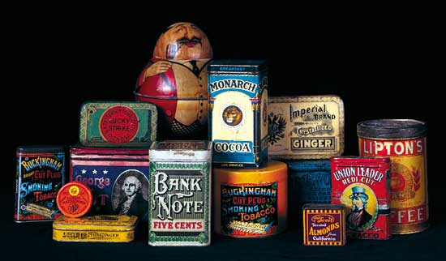
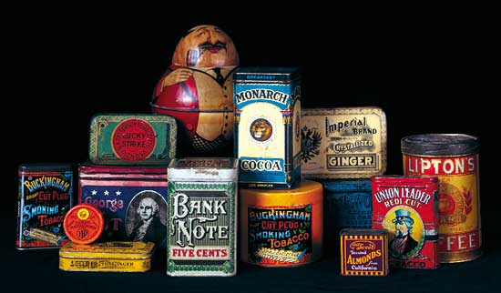
 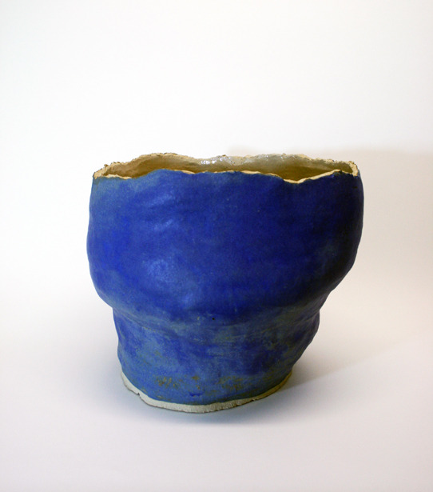
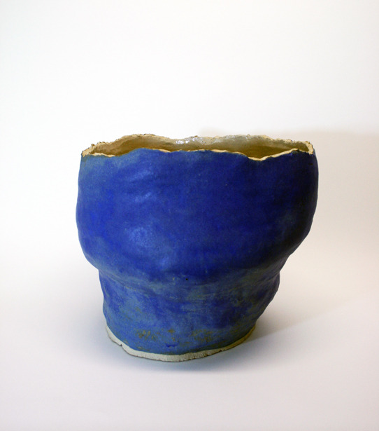


 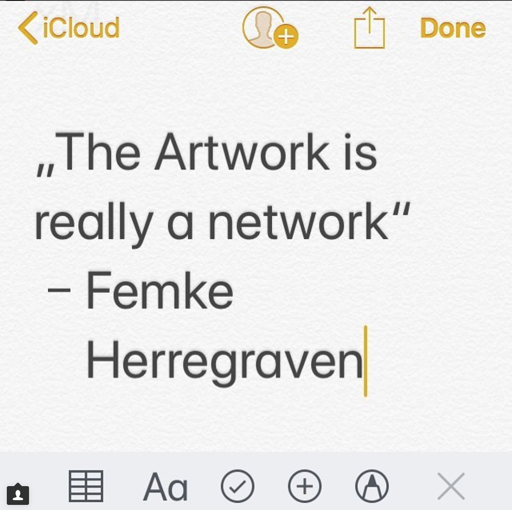
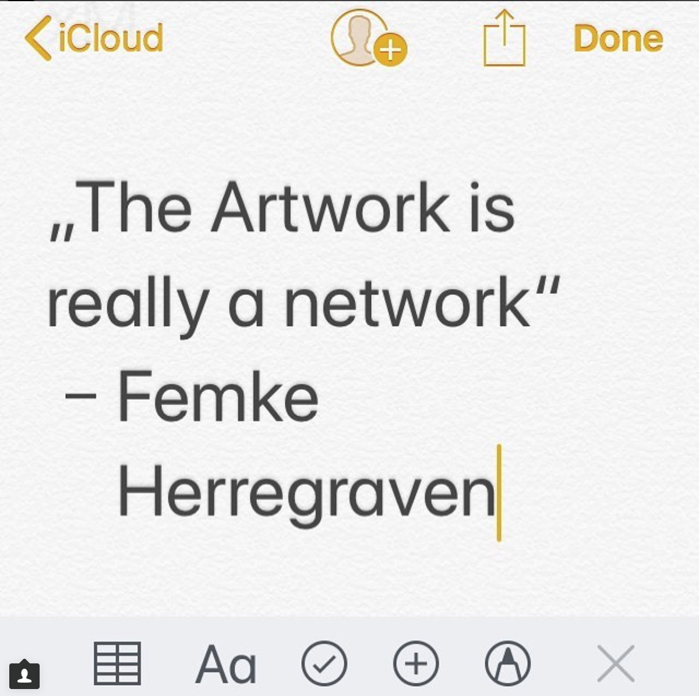


 en el Parque Nacional Yellowstone .jpg)


 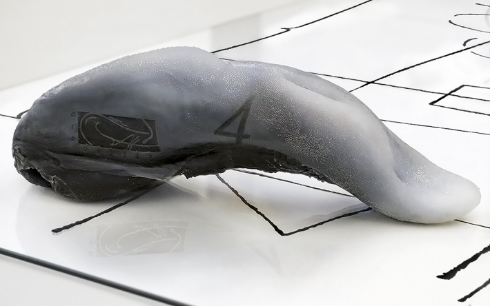
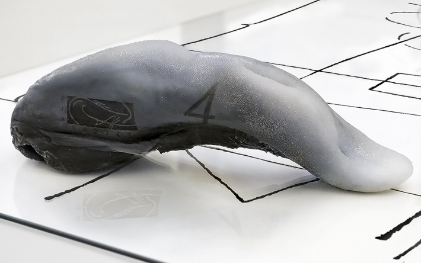


 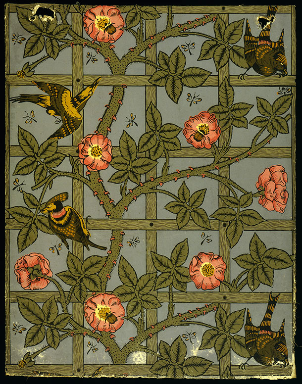
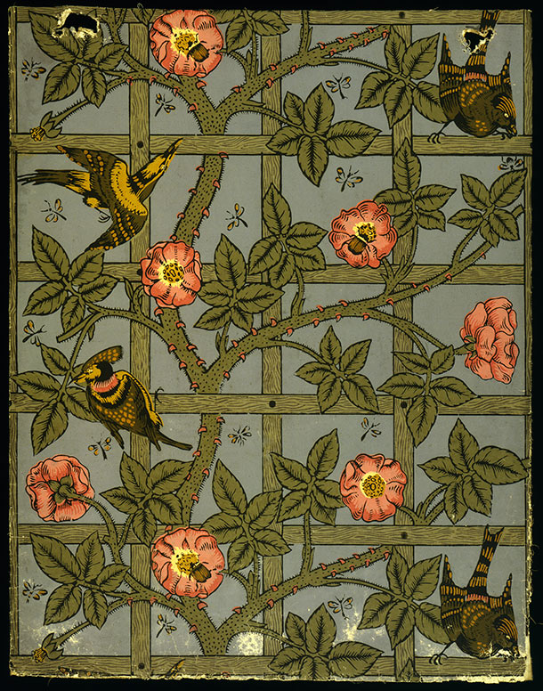

 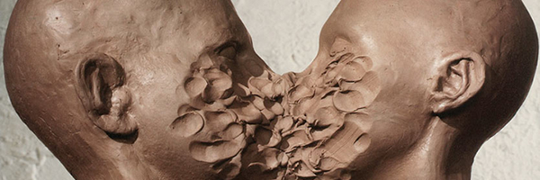
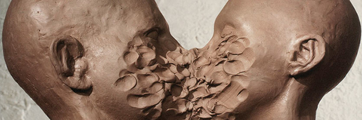


.jpg)


 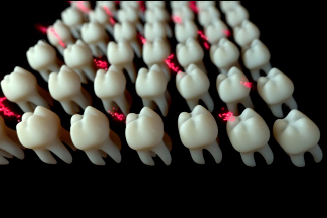
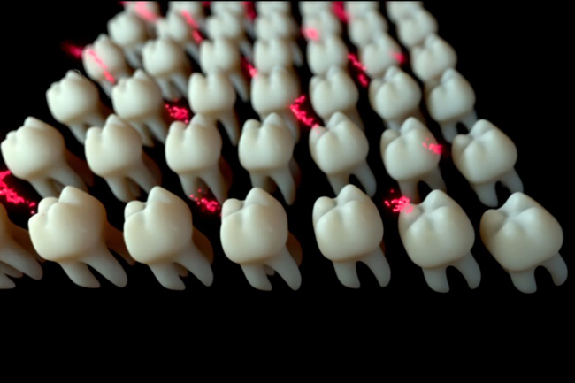


1. Tardigrades (water bears or moss piglets) can withstand environments as cold as –200 Celsius or as high as 148.9 C. They can also survive radiation, boiling liquids, massive amounts of pressure of up to six times the pressure of the deepest part of the ocean and even the vacuum of space without any protection.
2. Effects of abiotic species.
3. Without Persons, Luis Jacobs.
4. Still Life with a Skull and a Writing Quill, Pieter Claesz, 1628.
5. First automated door, Heron of Alexandria, 1st century AD.
6. Saya, ultra-realistic CGI by Teruyuki and Yuki Ishikawa, computer graphics creators, 2015.
7. Bathybius haeckelii, first discovered by biologist Thomas Henry Huxley who believed it was organic life, and then found out it was rests of a chemcical process of precipitation, 1868.
8. Voyager Golden Record, 1977.
9. The Beast, Beauty and the Beast, Walt Disney, 1991.
10. Through the looking Glass, John Tenniel, 1871.
11. The Scream, Edvard Munch, 1893.
12. Garden of Eden, Shutter-stock.
13. The Garden of Earthly Delights, Hieronymus Bosch, 1503–1515.
14. Creation of Adam, Michelangelo, 1508–1512.
15. Ossian Conjuring Up The Spirits, Gerard, Francois Pascal Simon, Baron, 1801.
16. Flammarion engraving, unknown artist.
17. The Hobbit, first edition 1937.
18. Wakan Tanka, Great Mystery, found on Pinterest, unknown artist.
19. Lakota tribe.
20. Sitting Bull, Lakota Indian.
21. Liberty Leading the People, Eugène Delacroix, 1830.
22. Banisteriopsis Caapi flower, commonly known as Ayahuasca.
23. One and Three Chairs, Joseph Kosuth, 1965.
24. David, Michelangelo, 1501–1504.
25. Rotten lemons png.
26. Hybrid with fairy, digital illustration, unknown artist.
27. LSD tabs, unknown artists.
28. Banana boat png
29. Gucci Lilith medium snakeskin top handle bag, 2017.
30. Lunacy, still, Jan Švankmajer, 2005.
29. Gucci Lilith medium snakeskin top handle bag, 2017.
30. Lunacy, still, Jan Švankmajer, 2005.
31. Aquifex aeolicus, thermophilic bacteria considered as one of the most ancient species of its kind.
32. Bearded Orientals: Making the Empire Cross, Priscilla Bracks, 2006.
33. The Week of Fictitious Culture, Ján Budaj and the group Temporary Society for Intense Experience (DISP), 1974-1981.
34. Budget Cut—Dutch Education, still, The Rodina, 2014.
35. Kiwa hirsute or “Yeti Crab”, is a type of crustaceous discovered in 2005. The "hairy" pincers contain filamentous bacteria, which the creature may use to detoxify poisonous minerals from the water emitted by the hydrothermal vents where it lives. This process is known as chemosynthesis
36. Chromolithography commercial.
37. Counter Memory 004, Kaleb de Groot, 2011.
38. Communication Networks, generally accepted models.
39. De Appel logo, designed by Will Holder.
40. Beauty Pageant Crown of Merit.
41. Cracked egg, unknown artist.
42. Empty Bowl, iStock.
43. Fact, 1967 issue, cover by Ralph Ginzberg.
44. Instagram post by @future_gallery, 4.12.17.
45. First steam printing, 1914.
46. Siri logo, Apple.
47. Grand Prismatic Spring, Yellowstone National Park.
48. Poster by Hassan-Massoudy, 2005.
49. Information Skies, still, Metahaven, 2016.
50. Alice, still, Jan Švankmajer, 1987.
51. Liquid Metal, Josse Pyl, 2017.
52. Information Skies, still, Metahaven, 2016.
53. Koichi Sato.
54. Kwakiutl woman.
55. AEG (Allgemeine Elektricitäts-Gesellschaft) logo, Peter Behrens, 1907.
56. Bosch, Lucien Bernhard, 1913.
57. Ritual mat, ceder bark.
58. William Morris, 1862.
59. Nixie drone, prototype, 2014.
60. Petroleum jelly, Vaseline.
61. Dimensions of Dialogue, still, Jan Švankmajer, 1982.
62. Poster proposal for the Japanese World Expo’70 in Ōsaka, by Kamekura Yusaku, 1967.
63. First Printing Koen-double-roll-press.
64. Fiorucci Made Me Hardcore, Mark Leckey, 1999.
65. Brodka—Funeral, still from official video by Kevin Bray, 2016.
66. Approximations II, Katja Novitskova, 2012.
67. You are Standing in an Open Field (Waterfall), Jon Rafman, 2015.
68. You are Standing in an Open Field (Woodsman), Jon Rafman, 2015.
69. You are Standing in an Open Field (Artic), Jon Rafman, 2015.
70. Political Peace Anti-War Vietnam, Richard Avedon, 1969.
71. Raw Meat png.
72. The Architecture of the Multiverse, Charles Jencks.
73. Tinder logo, DesignStudio in collaboration with In-house.
74. Plastic Bag, still, Ramin Bahrani, 2009.
75. The Four Season, Alphonse Mucha, 1895.
76. The Brightness, still, Cécile B. Evans, 2013.
77. Theresa Scherrer’s interpretation of Bob Ross, 2017.
78. White Island, Bay of Plenty, New Zealand.
79. Wai-O-Tapu Geothermal Springs, New Zealand.
80. Hyper Geography, Joe Hamilton, 2011.
81. Idem.
82. Regular Division, Joe Hamilton, 2014.
83. Recent Ouija, Ed Atkins, 2015.
84. Liquid Territories, Broersen & Lukács, 2014.
85. Everytime, Broersen & Lukács, 2010.
86. Cave Painting of Lascaux.
87. Idem.
88. Nike logo.
89. Mummy of King Ramses II (19th Dynasty). Dry natron mummification process. The design of the canopic jars were characterized by plugs with images of the children of Horus (Human, baboon, jackal and falcon head).